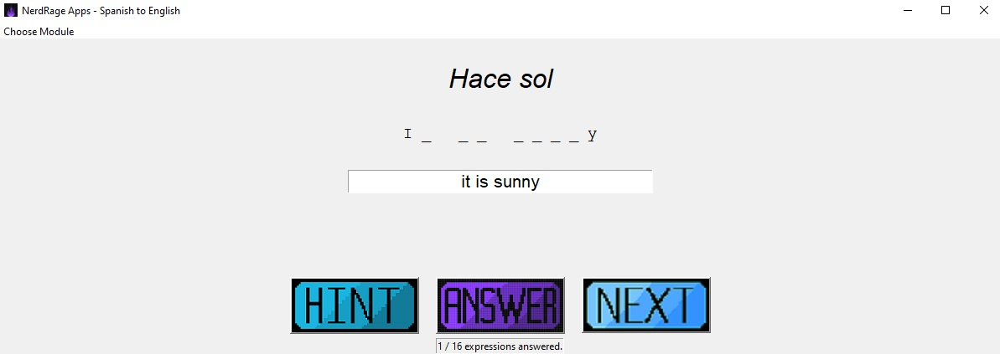

This app contains all vocab for GCSE Spanish Higher, and was a great tool for my Y11 students when preparing for their tests. Same as all other projects in this section, you can see it in all its glory in GitHub.
The user can choose the topic by clicking in the 'Choose Module' tab. A random Spanish expression will appear, and he can opt for receiving up to two hints per expression: the first clue will be the first letter of the whole expression; the second clue would be the first and last letters of the expression, plus the amount of letters and spaces (as shown on image).
The user can also see how many correct expressions he has answered so far.
Another app for my students, this one concentrates on Spanish regular verbs in 9 different tenses.
The user can check or un check the tenses and the persons he wants to practice: on the example from the image, the user will be asked for a random verb from the list of infinitives, in a random tense (except Imperfect or Perfect int this case) and a random person. If the user provides 3 wrong answers, the program will eventually show the right answer.
This app was extremely useful in class whenever I was teaching any of those tenses, and was also very useful to many of my students from different year groups.
It could not be too long until I started making silly apps for my amusement: this app tells you a Chuck Norris joke and then translates it to 12 languages, including Welsh.
But in this case I also created this one in order to practice with APIs: the jokes are not stored in the app, they are fetched from the Chuck Norris API, and for the translation I rely on the Google Translate API.
True fact: Chuck Norris does not use a debugger. He stares down until the code confesses.
This extremely useful and potentially life-saving app takes the user input and converts it into morse code, using Street Fighter punch sounds.


I used a very large json file with lots of information about IMDB's 1000 top rated movies of all time, which also contains the metarcritic ratings.
I created graphs about some of the movies to watch, actors which appear frequently in these above-average films, or the final battle of the directors between Hitchcock vs Spielberg.
The best thing is I was able to create a very handy movie recomendator, which I keep using all the time (see image). You pick a year by clicking on one of the options from inner circle: each colour is a year. The year will expand showing the options from the middle circle, the possible genres. Pick one and it will expand again showing you the contents from the outer circle, some great movies in that year for that genre, all of them inside the top 1000 IMDB movies of all time.
I created some graphs about the countries with the highest number of total homicides and countries with highest average of homicides per inhabitant.
You can see the number of murders filtering by region, continent, country, year, etc.
Very handy when planning for your next holidays!

© 2022 Javi Rute